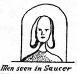
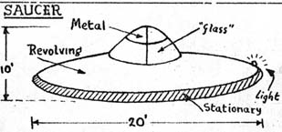

À Pons (France), 1 objet en forme d'oeuf, d'un diamètre approximatif de 5,5 m, survole
et atterrit près de la route. 2 "nains", hauts de 1,25 m environ, en sortent et y retournèrent presque
immédiatement, puis l'engin s'éleva verticalement, en produisant une traînée rouge derrière lui France
-Soir, 22 octobre 1954.
À Melito (Italie), 1 jeune homme qui marchait dans un champ a entendu un bruit
ininterrompu et vu un engin étrange atterrir près de lui. Alors qu'il s'en approchait pour pouvoir mieux l'observer,
il aperçut un pilote en scaphandre sortir de l'engin, qui émettait des rayons lumineux d'un vert bronze, illuminant
toute la campagne. Le témoin fut paralysé. Les aboiements d'un chien, éloigné d'une centaine de mètres, provoquèrent
la fuite rapide du pilote qui entra dans l'engin qui décolla.
Hommes vus dans la soucoupe, basé sur les croquis d'origine de Jessie Rosenberg

Dessin de la soucoupe observée, basé sur les croquis d'origine de Jessie Rosenberg

A Ranton (près de Shrewsbury dans le Staffordshire), Jessie (Jenny?) Rosenberg (Roestenberg?) (29 ans, épouse d'un Hollandais installé aux Royaume Uni) et ses 2 enfants voient un objet en forme de lentille/disque de couleur
aluminium survoler leur maison de manière inclinée. A travers 2 panneaux transparents, elle distingue 2 silhouettes
humanoïdes à la peau blanche, de longs cheveux blonds tombant sur leurs épaules, au front très haut par rapport au
reste du visage, les regarder d'en haut sévèrement, non d'une façon inamicale, mais presque tristement, avec
compassion. Ils portent des casques transparents et des vêtements bleu turquoise faisant penser à un ensemble de
ski. Ils sont si effrayés qu'ils se cachent sous une table dans leur maison. Par la suite, ils auraient eu quelques
expériences psychiques Mysterious BritainGibbons, Gavin, The Coming of the Space Ships, Neville Spearman, Londres < Bowen, C., En quête d'humanoïdes, p. 17.
A Criteuil-la-Madelaine (France), le moteur d'une voiture conduite
par M. Fillonneau, maçon de profession, cale à l'approche d'une grande boule de feu. Un
violent déplacement d'air est ressenti. La batterie est morte et les phares grillés. L'enquête appronfondie,
effectuée par la police, ne parviendra pas à identifier la cause de ce phénomène France-Soir, Le Soir, 24 octobre 1954.
A Pouzou (France), 1 homme et son fils (4 ans), en provenance de
Charbonnières, ressentent brusquement de douloureux picotements, semblables à ceux produits par une secousse
électrique, l'enfant se met à pleurer. L'intensité de la douleur augmente au fur et à mesure que la voiture
avançait, jusqu'à l'arrêt brusque du moteur et l'extinction des phares. Ils sont aveuglés par une puissante lumière
rouge qui vire à l'orange, elle émanait d'un objet qui évolue au-dessus de la route. Dés que l'objet a disparu, tout
redevient normal L'Aurore, 22 octobre 1954.